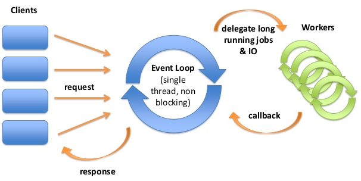

High performance
Ruby
TCP services
привет, товарищ!
$ whoami --code
- Software Engineer / Architect
- Karafka framework creator
- OSS contributor (~12 years with Ruby)
$ whoami --work

Castle detects and mitigates account takeovers in web and mobile apps
$ whoami --moscow
- 1st time in Russia
- Moscow is awesome!
M: Solnic, is it a dating scam?
S: Go!

Kraków Ruby Users Group organizer
- One of the biggest Ruby communities in Europe
- Over 1200 members
- 60-150 attendees per event
- One meeting per month with 2-3 tech talks
- 21 sponsors


github.com/karafka/karafka
Workshops tomorrow
$ whoami --contact
github: github.com/mensfeld
www: mensfeld.pl
twitter: @maciejmensfeld
e-mail: maciej@mensfeld.pl
Talk to me about:
Karafka, Kafka, Ruby, System Architecture, High throughput data processing, dry-rb, Trailblazer, TCP, Ruby on Rails or anything else TBH :)
Please notify me if...
- I speak 2 fast
- I should repeat anything
- I should explain something better
- You have any questions
What do I hope to leave you with?
Non-standard solutions can be good! Ruby has a lot more to offer than just the "Rails ecosystem".
HTTP is a great protocol. It's well designed, well known, extremely popular and supported by multiple libraries. But it's not the end of the world.This session should help you understand that and should provide a gentle intro to TCP itself and how it can be used in Ruby based applications to obtain sub-milisecond performance.
Agenda
- Problem characteristics
- Internal SLAs
- dRuby?
- Sync services
- Async services
Warning!
Simplifications ahead
It's a huge topic, so I made some simplifications down the road.
Problem characteristics
Castle detects and mitigates account takeovers in web and mobile apps
Password hacking is easy in 2018
- sentry-mba.com, 2captcha.com, pastebin.com, ...
- 73% passwords are used on multiple sites
- 3.1B credentials leaked only in 2016

- More than 100 mln events per day
- Over 21 mln active daily users
- Over 50 mlnactive user overall
- Over 2.5 mln failed logins daily
And everything would we awesome, if all of it could be asynchronous.
(and it can, but let's assume it's a no-no)
More about that in Antons talk
There are always some customer facing endpoints, that must remain synchronous.
Sometimes even internal services need to remain synchronous due to the processing flow.
(do they?)This is exactly the case we will tackle today.
Castle Leaked Credentials
- Over 2 billion of records that need to be accessible in a synchronous mode
- It's a crutial but not mission critical component, so if it fails, it should not impact the rest of the system
- It should be efficient enough to handle a lot of traffic cheaply
- The less infrastructure it requires the better
- Should allow to set internal SLA policies depending on the usecase and the client
How much is 100 mln requests a day?
- ~ 4,2 mln rq per hour
- ~ 70 k rq per miIdenute
- ~ 1200 rq per second
So, what do we actually need?
A service, that will:
- Receive an email and return statistics on it's presence in e-mail leaks
- Always respond within a certain timeframe
- Ideally handle all the traffic using a single process + some backup
- Will provide the versioning information
HTTP
GET /version
GET /leaks/:email
Why not HTTP?
- Because it creates a new connection per each request
- Because it has a certain overhead in it due to it's specification
- Because this is meant to be a micro-service with a single endpoint (plus versioning) with small pieces of data being transfered
SLA management
SLAs are used as a method of measuring and potentially penalizing performance according to predetermined, mutually agreed upon standards
SLA management
- They work great also for internal services
- "SLAized" approach requires team that understands timeouts, monitoring and infrastructure details
- It needs to be supported and handled by both client and server side
- Requires awareness of the importance of particular system components
dRuby?
dRuby is a distributed object system for Ruby. It is written in pure Ruby and uses its own protocol. No add-in services are needed beyond those provided by the Ruby runtime, such as TCP sockets.Quote source: DRb
dRuby
dRuby
- Methods called upon this DRbObject instance are forwarded to its remote object.
- Any object can receive calls over dRuby
- Method calls made over dRuby behave largely the same as normal Ruby method calls made within a process
- A dRuby reference to an object is not sufficient to prevent it being garbage collected!
dRuby
- Works remotely
- Allows distribution
- Provides failover support (connection errors detection)
- Pure Ruby, Ruby only
dRuby server
require 'drb/drb'
URI="druby://localhost:8787"
class TimeServer
def current_time
Time.now
end
end
FRONT_OBJECT=TimeServer.new
DRb.start_service(URI, FRONT_OBJECT)
DRb.thread.join
dRuby client
require 'drb/drb'
SERVER_URI="druby://localhost:8787"
DRb.start_service
timeserver = DRbObject.new_with_uri(SERVER_URI)
puts timeserver.current_time
dRuby
- It's synchronous
- Works
- It's super simple even for more complex cases
- Rapid development process
dRuby
- Almost unknown outside of Japan
- Brings a lot of uncertainties
- It's not explicit
- Lacks in the documentation
- Lacks in any docs on the scalability and load balancing
- Due to the marshalling process, it's a bit slow (> 10ms)
- No timeout support, no control over the socket
dRuby
dRuby
Sync services
So, if it's going to be a sync service, why not to put it into the codebase?
Sync services
- Isolation (easier deployment, management, replacement, scaling)
- Extraction of concerns (context separation)
- Memory usage efficiency
- Possibility to reuse across the whole eco-system
- Cross-app dependencies reduced only to the interface / API of the service
Sync services
Challenges
Despite of it's nature (sync/async) be aware, that you will have to deal with following things:
- Server timeouts
- Clients timeouts
- Partial data in the socket
- Linux specific things like priorities, schedulers, etc
- Handling new connections / disconnections
Sync services
Challenges
- Low level frameworking (signals, hangs, exceptions)
- Heavy instrumentation
- Managing server limits and rejection support
- Keep alive for LB (NLB in particular)
- Poor Ruby docs on the particular TCP options
Sync services
Challenges
- Network / recovery issues
- Poor Ruby socket operations timeouts support
- Protocol format
- Ruby bugs (#14997)
Sync services
require 'socket'
server = TCPServer.new 2000
loop do
Thread.start(server.accept) do |client|
while ping = client.gets
client.puts ping
end
end
end
Sync services
require 'socket'
server = TCPServer.new 2000
loop do
Thread.start(server.accept) do |client|
while ping = client.gets
client.puts ping
end
end
end
Design
Applications are meant to live within the VM.
They should be started, stopped, restarted and killed without interrupting the VM.
This means, that ideally it would be great to just provide a TCP "frame" to which you can bind any apps you want in any way.
Sync services
Sync services
- Great when less than 100 concurrent connections
- Everything under your control (not only the client)
- A lot of work to get things done in a stable way
- Can easily incorporate any custom instrumentation / logging that you might need
- Highly memory efficient
- Most of the time not worth the effort
Sync services
EventMachine
You don't have to do things manually
EventMachine
EventMachine is an event-driven I/O and lightweight concurrency library for Ruby. It provides event-driven I/O using the Reactor pattern, much like JBoss Netty, Apache MINA, Python's Twisted, Node.js, libevent and libev.
EventMachine
 Image source: The reactor pattern and non-blocking IOEventMachine
- Battle tested for years
- Suited for systems with thousands of connections
- Includes support for both sync and async business logic execution
- Easy sockets state management
EventMachine
module EchoServer
def post_init
puts "-- someone connected to the echo server!"
end
def receive_data(data)
send_data data
end
end
EventMachine.run do
EventMachine.start_server "127.0.0.1", 8081, EchoServer
end
Client
You will have to wrap the socket by yourself with a lot of magic for timeouts and settings:
setsockopt(Socket::IPPROTO_TCP, Socket::TCP_NODELAY, 1)
setsockopt(Socket::SOL_SOCKET, Socket::SO_KEEPALIVE, val)
setsockopt(Socket::SOL_TCP, Socket::TCP_KEEPIDLE, value)
setsockopt(Socket::SOL_TCP, Socket::TCP_KEEPINTVL, value)
setsockopt(Socket::SOL_TCP, Socket::TCP_KEEPCNT, value)
Client
You will have to wrap the socket by yourself with a lot of magic for timeouts and settings:
unless IO.select([socket], nil, nil, config.wait_timeout)
raise(
Errors::TimeoutError,
config.wait_timeout
)
end
Nagle's algorithm - your worse nightmare
Nagle's algorithm is a means of improving the efficiency of TCP/IP networks by reducing the number of packets that need to be sent over the network.
Nagle's algorithm - your worse nightmare
Image source: Nagle's AlgorithmNagle's algorithm - your worse nightmare
setsockopt(Socket::IPPROTO_TCP, Socket::TCP_NODELAY, 1)
Performance

Performance
Problems
Problems you won't bypass
- DNS resolving performance
- Network overhead
- Random CPU spikes
- Linux kernel schedulers
- Processes priorities
- Randomness
Hitting the production
So, you've built yourself a nice server and a client
- Works locally
- Works for staging
- Timeouts and recovery works like a charm
- Obeys all the performance limits
you deploy it and...
Hitting the production
Everything works until a certain Saturday...

Unexpected Ruby behaviours
This problem actually affects any TCP based Ruby code.
That means, that it will apply to your HTTP applications as well
Ruby is not the best with networking
If you set a timeout to 50ms, you would expect it to stop after 50ms, right?
Well...
It doesn't
Unexpected Ruby behaviours
Let's do Ruby!
Addrinfo.foreach(host, port, nil, :STREAM) {|ai|
# Not important stuff here...
begin
sock = local_addr ?
ai.connect_from(local_addr, timeout: connect_timeout) :
ai.connect(timeout: connect_timeout)
rescue SystemCallError
last_error = $!
next
end
ret = sock
break
}
Unexpected Ruby behaviours
If you combine it with a LB that during server downtime holds the connection half-open, you end up with a timeout multiplication when everything behind is down.
In our case, that meant slowing system down 5 times causing serious problems.
Unexpected Ruby behaviours
Can it be fixed?
Yes, but...
It's been 2 months since I've reported that issue and no one is willing to even tell me, whether my fix is valid in the way it works.
The issue remained unreplied...
Unexpected Ruby behaviours
Until now!
Making things even better
Making things even better
Asynchronous is back!
Asynchronous is back!
- You can achieve multi-process parallel execution that way
- IO operations aren't GILed
- You can embrace SLAs and minimize the risk of extreme slowness of the whole system
- < 5ms performance is achievable because it's not needed
How?
EventMachine
+ asynchronous libraries almost the same way as the sync once
Things you will have to deal with
- All the sync problems
- Plus partial data in the sockets (both ways)
Isolate
Play
Experiment
Monitor
THE END
- www: github.com/karafka
- email: maciej@mensfeld.pl
- twitter: @maciejmensfeld